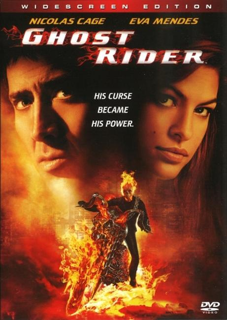

Ghost Rider is the name of many fictional supernatural antiheroes appearing in American comic books published by Marvel Comics. Marvel had previously used the name for a Western character whose name was Night Rider, later changed to Phantom Rider.
The first supernatural Ghost Rider is stunt motorcyclist Johnny Blaze, who, in order to save the life of his father, agreed to give his soul to "Satan" (later revealed to be an arch-demon named Mephisto). At night and when around evil, Blaze finds his flesh consumed by hellfire, causing his head to become a flaming skull. He rides a fiery motorcycle and wields blasts of hellfire from his body, usually from his skeletal hands.
He eventually learns he has been bonded with the demon Zarathos. Blaze starred in the Ghost Rider series from 1972 to 1983. The subsequent Ghost Rider series (1990–1998) featured Danny Ketch as a new Ghost Rider. After his sister was injured by ninja gangsters, Ketch came in contact with a motorcycle that had somehow been mystically enchanted to contain the essence of a Spirit of Vengeance. Blaze reappeared in this 1990s series as a supporting character, and it was later revealed that Danny and his sister were Johnny Blaze's long lost siblings.
In 2000s comics, Blaze again became the Ghost Rider, succeeding Ketch. In 2013, Robbie Reyes became Ghost Rider as part of the Marvel NOW! initiative.

Nicolas Cage starred as the Johnny Blaze iteration of the character in the 2007 film Ghost Rider and the sequel Ghost Rider: Spirit of Vengeance in 2011. Gabriel Luna plays the Robbie Reyes version in the television series Agents of S.H.I.E.L.D. The actors Henry Simmons and Clark Gregg also play Ghost Rider briefly.